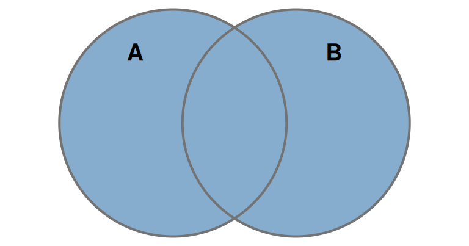
Probability and distributions
ETX1100/5900 | Business Statistics
1 December 2026
Save these slides as a PDF
Press E, then Ctrl/Cmd + P and choose Save as PDF.
OR
Click ☰ (menu) > Tools > PDF export mode, then Ctrl/Cmd + P and choose Save as PDF.
Today’s roadmap
- Probability
- Coin flip
- Dice roll
- Heart disease and Exercise level
- Conditional probability
- 10 MIN BREAK
- Independent events
- Probability density functions
- Normal distribution
- Standard normal distibution
- In class Exercise
Probability
What is probability?
Probability is the mathematical measure of how likely an event is to happen
- Values range from 0 to 1
- Expressed as a fraction, decimal or a percentage.
P(\text{Event}) = \frac{\text{Number of ways the event can happen}}{\text{Total number of outcomes}}
Coinflip 🪙
There are two possible outcomes when flipping a fair coin:
Heads (\text{H})
P(\text{H}) = \frac{1}{2} = 0.5
Tails (\text{T})
P(\text{T}) = \frac{1}{2} = 0.5
Marginal probability is the probability of one event happening, regardless of anything else.
Tip
Adding the marginal probabilities will always total to 1
Mutually exclusive events 🎲
- There are 6 only possible outcomes in a rolling a fair, 6-sided die.
- What is the probability of rolling a 1 OR a 6?
- A single roll cannot produce both 1 and 6 = mutually exclusive event
- P(\text{roll 1}) = \frac{1}{6}
- P(\text{roll 6}) = \frac{1}{6}
The probability of A OR B is called the union, represented by \cup P(\text{roll 1} \cup \text{roll 6}) = \frac{1}{6} + \frac{1}{6} = \frac{2}{6}
Tip
When two events are mutually exclusive (cannot happen together), add their probabilities to calculate the probability of either event occurring.
Non-mutually exclusive events 🎲
Now consider:
- Event A: Rolling a 1 OR a 6
- Event B: Rolling an even number 2, 4, 6
What is the probability of Event A or B taking place?
P(\text{A}) = \frac{1}{6} + \mathbf{\frac{1}{6}} = \frac{2}{6}
P(\text{B}) = \frac{1}{6} + \frac{1}{6} + \mathbf{\frac{1}{6}} = \frac{3}{6}
So we just add these two events together right? 😏 NO!
P(\text{A} \cup \text{B}) = \frac{2}{6} + \frac{3}{6} = \frac{5}{6}\quad🙅♀️
Tip
These events are not mutually exclusive , because rolling 6 satisfies both event conditions. Adding them will double count rolling 6!
Intersection 🎲
- Event A: Rolling a 1 OR a 6
- Event B: Rolling an even number 2, 4, 6
Rolling a 6 satisfies both event conditions. This shared outcome is called intersection \cap P(\text{A}\cap \text{B})
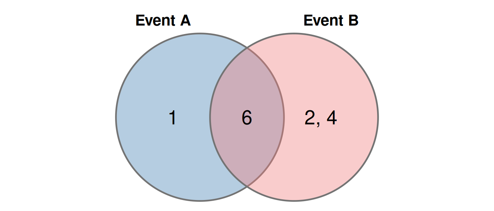
Tip
The probability of Event A AND Event B taking place is called the joint probability
Non-mutually exclusive events 🎲
What is the probability of Event A or B taking place?
Event A
Roll a 1 or 6
P(\text{A}) = \frac{2}{6}
Event B
Roll a 2, 4 or 6
P(\text{B}) = \frac{3}{6}
Shared outcome
Roll a 6
P(\text{A} \cap \text{B}) = \frac{1}{6}
\begin{aligned} P(\text{A} \cup \text{B}) &= P(\text{A}) + P(\text{B}) - P(\text{A} \cap \text{B}) \\ &= \frac{2}{6} + \frac{3}{6} - \frac{1}{6} \\ &= \frac{4}{6} \end{aligned}
Solution
We need to subtract the intersection from the calculation to avoid double counting.
Bringing it together
What is the probability of Event A and B taking place?
\underbrace{P(A \cup B)}_{\text{Union}}
=\underbrace{P(A) + P(B)}_{\text{Marginal probabilities}}
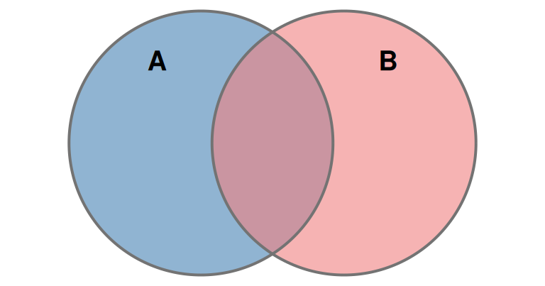
-\underbrace{P(A \cap B)}_{\text{Joint probability}}
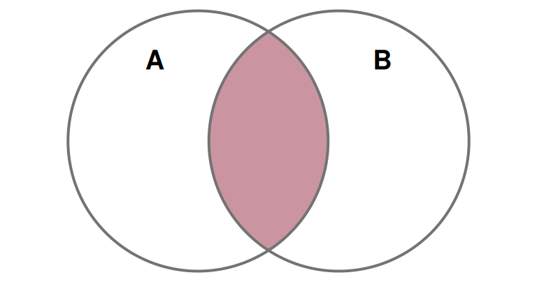
Tip
For mutually exclusive events, the joint probability is 0. That’s why we can simply add the marginal probabilities up!
Heart disease and Exercise 🏃♀️➡️
Each row of the Heart Disease worksheet is one person (5,000 people).
| Column | Meaning | Data type and values |
|---|---|---|
Person |
Person identifier | Identifier, 1–5,000 |
Exercise |
Exercise level | Categorical, Minimal/Moderate |
Heart Disease |
Heart disease status | Categorical, Yes/No |
What are the probabilities of each of these conditions coexisting?
Two-way table (notations)
Let:
- H_{\text{No}} and H_{\text{Yes}} denote heart disease status (rows) ➡️
- E_{\text{Min}} and E_{\text{Mod}} denote exercise level (columns). ⬇️
| Heart disease | Minimal exercise (E_{\text{Min}}) | Moderate exercise (E_{\text{Mod}}) | Total |
|---|---|---|---|
| No (H_{\text{No}}) | P(H_{\text{No}} \cap E_{\text{Min}}) | P(H_{\text{No}} \cap E_{\text{Mod}}) | P(H_{\text{No}}) |
| Yes (H_{\text{Yes}}) | P(H_{\text{Yes}} \cap E_{\text{Min}}) | P(H_{\text{Yes}} \cap E_{\text{Mod}}) | P(H_{\text{Yes}}) |
| Total | P(E_{\text{Min}}) | P(E_{\text{Mod}}) | 1 |
The four inside cells are joint probabilities; the row and column totals are marginal probabilities.
Tip
Read \cap as AND
Two-way table (counts) - Watch me 👀
Recall
A Pivot Table groups your data and summarises them as counts/percentages
- Click any cell in the data, and choose Insert > PivotTable.
- Select the entire dataset, choose New Worksheet, then click OK.
- In PivotTable Fields, drag
Heart Diseaseto Rows andExerciseto Columns. - Drag
Heart Diseaseto Values. Open Value Field Settings and choose Summarize Values By > Count.
Check that the Grand Total is 5,000 people.
Two-way table (counts)
| Exercise | Total | |||
|---|---|---|---|---|
| Minimal | Moderate | |||
| Heart Disease | No | 2,996 | 1,741 | 4,737 |
| Yes | 220 | 43 | 263 | |
| Total | 3,216 | 1,784 | 5,000 | |
Each inside cell counts people with both the row’s heart disease status and the column’s exercise level.
Counts to probabilities: % Grand total - You try ✏️
- In the PivotTable, right-click any count and choose Show Values As > % of Grand Total.
Calculate
If you choose someone at random from the population, what is the probability that they:
- have no heart disease
- do a moderate amount of exercise
- do a moderate amount of exercise and have no heart disease
- do a moderate amount of exercise or have no heart disease
Discuss
Are Heart Disease and Exercise levels mutually exclusive events?
Two-way table (probabilities)
| Heart disease | Minimal exercise | Moderate exercise | Total |
|---|---|---|---|
| No | 59.92% | 34.82% | 94.74% |
| Yes | 4.40% | 0.86% | 5.26% |
| Total | 64.32% | 35.68% | 100% |
Solution
- P(H_{\text{No}})=4{,}737/5{,}000=94.74\%.
- P(E_{\text{Mod}})=1{,}784/5{,}000=35.68\%.
- P(H_{\text{No}}\cap E_{\text{Mod}})=1{,}741/5{,}000=34.82\%.
- P(H_{\text{No}}\cup E_{\text{Mod}})=P(H_{\text{No}})+P(E_{\text{Mod}})-P(H_{\text{No}}\cap E_{\text{Mod}})=95.60\%.
Are Heart Disease and Exercise levels mutually exclusive events?
Ask, can these two events happen at the same time?
- Recall that for mutually exclusive events e.g. P(H_\text{yes} \cap E_\text{minimal}) = 0
Solution
- Our table shows P(H_\text{yes} \cap E_\text{minimal}) = 4.4%
- We can conclude
Heart DiseaseandExerciselevels are NOT mutually exclusive events.
| Heart disease | Minimal exercise | Moderate exercise | Total |
|---|---|---|---|
| No | 59.92% | 34.82% | 94.74% |
| Yes | 4.40% | 0.86% | 5.26% |
| Total | 64.32% | 35.68% | 100% |
Does knowing something change the probability?
What is the probability that a randomly selected person exercises moderately? P(E_{\text{Mod}}) = 35.68\% Well… what if this person already has heart disease?
| Heart disease | Minimal exercise | Moderate exercise | Total |
|---|---|---|---|
| No | 59.92% | 34.82% | 94.74% |
| Yes | 4.40% | 0.86% | 5.26% |
| Total | 64.32% | 35.68% | 100% |
Tip
Knowing the randomly selection person has heart disease changes the pool of possible outcomes or denominator for our probability calculations
Conditional probability
Probability of an event occuring given that another event has already happened
E: Does moderate exercise
H: Has heart disease.
Expressed as:
P(\text{E} \mid \text{H}) = \frac{\overbrace{P(\text{E} \cap \text{H})}^{\text{Intersection}}}{P(\text{H})}
Tip
- Recall that the intersection is the joint probability of Event E and H occuring
- Event E is conditional on Event H
Conditional probability
Of those with heart disease, what percentage exercise moderately?
E: Does moderate exercise
H: Has heart disease.
\begin{aligned} P(E \mid H) &= \frac{P(E \cap H)}{P(H)} \\ &= \frac{43}{263} \\ &= \mathbf{16.35\%} \end{aligned}
People (count)
| Heart disease | Minimal | Moderate | Total |
|---|---|---|---|
| No | 2,996 | 1,741 | 4,737 |
| Yes | 220 | 43 | 263 |
| Total | 3,216 | 1,784 | 5,000 |
Two-way table (probability) - % Row total - Watch me 👀
Of those with heart disease, what is the probability that someone exercises moderately? P(E_{\text{Mod}} \mid H_{\text{Yes}})
- Open the
Heart Diseaseworksheet, click any cell in the data, and choose Insert > PivotTable. - Select the entire dataset, choose New Worksheet, then click OK.
- In PivotTable Fields, drag
Heart Diseaseto Rows andExerciseto Columns. - Drag
Heart Diseaseto Values. In Value Field Settings, choose Summarize Values By > Count. - Right-click any count and choose Show Values As > % of Row Total. Format the values as percentages with two decimal places.
Two-way table (probability)
| Heart disease | Minimal | Moderate | Total |
|---|---|---|---|
| No | 63.25% | 36.75% | 100.00% |
| Yes | 83.65% | 16.35% | 100.00% |
| Total | 64.32% | 35.68% | 100.00% |
Solution
Among people with heart disease, 43 of 263 exercise moderately: P(E_{\text{Mod}} \mid H_{\text{Yes}}) = 43/263 = \mathbf{16.35\%}. Use the Yes row total as the denominator.
Two-way table (probability) - % Column Total - You try ✏️
What is the probability that someone does not have heart disease, given that they do minimal exercise? P(H_{\text{No}} \mid E_{\text{Min}})
- Open the
Heart Diseaseworksheet, click any cell in the data, and choose Insert > PivotTable. - Select the entire dataset, choose New Worksheet, then click OK.
- In PivotTable Fields, drag
Heart Diseaseto Rows andExerciseto Columns. - Drag
Heart Diseaseto Values. In Value Field Settings, choose Summarize Values By > Count. - Right-click any count and choose Show Values As > % of Column Total. Format the values as percentages with two decimal places.
Two-way table (probability)
| Heart disease | Minimal | Moderate | Total |
|---|---|---|---|
| No | 93.16% | 97.59% | 94.74% |
| Yes | 6.84% | 2.41% | 5.26% |
| Total | 100.00% | 100.00% | 100.00% |
Solution
Among people who do minimal exercise, 2,996 of 3,216 do not have heart disease: P(H_{\text{No}} \mid E_{\text{Min}}) = 2{,}996/3{,}216 = \mathbf{93.16\%}. Use the Minimal column total as the denominator.
Break
Independent events 🎲 x 🎲
Two events are independent if knowing that one event occurred does not change the probability of the other.
- If Heart disease and Exercise are independent (i.e. they don’t affect each other) then:
E: moderate exercise; H: has heart disease.
P(\text{E} \mid \text{H}) = P(\text{E})
Independent events 🎲 x 🎲
E: moderate exercise; H: has heart disease.
People (count)
| Heart disease | Minimal | Moderate | Total |
|---|---|---|---|
| No | 2,996 | 1,741 | 4,737 |
| Yes | 220 | 43 | 263 |
| Total | 3,216 | 1,784 | 5,000 |
Conditional: among those with heart disease
\begin{aligned} P(E \mid H) &= \frac{P(E \cap H)}{P(H)} \\ &= \frac{43}{263} \approx 16.35\% \end{aligned}
Marginal: among everyone
P(E) = \frac{1{,}784}{5{,}000} = 35.68\%
Solution
P(E \mid H) \ne P(E): 16.35% ≠ 35.68%. Heart disease and exercise are not independent.
Probability: recap
Let A=\{1,6\} and B=\{2,4,6\} on one fair die.
| Concept | Notation | Example/reminder |
|---|---|---|
| Marginal | P(A): one event | Coin: P(\text{heads})=1/2 |
| Mutually exclusive | P(C)+P(D) ; P(C\cap D)=0 | Die: C=\{1\}, D=\{6\}; add |
| Union | P(A\cup B): or | Die: P(A\cup B)=4/6; check exclusive status* |
| Joint/Intersection | P(A\cap B): and | Die: shared roll 6, so 1/6 |
| Not mutually exclusive | P(A\cup B)=P(A)+P(B)-P(A\cap B) | Die: 2/6+3/6-1/6=4/6* |
Mutually exclusive: no overlap
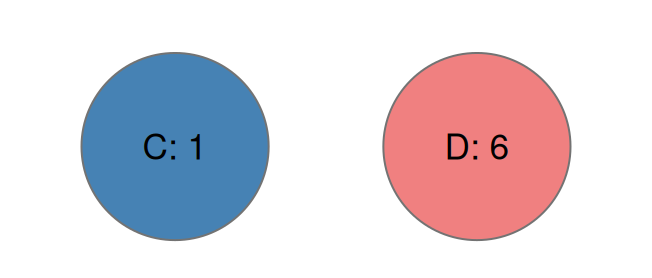
Not mutually exclusive: shared 6
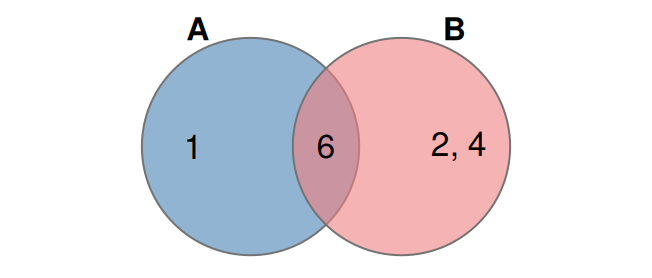
Probability: recap
Let X,Y heads on the first and second coin flips; E Exercise moderately, H Has heart disease
| Concept | Notation | Example/reminder |
|---|---|---|
| Conditional | P(E\mid H)=P(E\cap H)/P(H): given H | Heart disease: changes denominator |
| Independent | P(X\mid Y)=P(X) | Seperate processes |
PDFs (not the one you’re thinking of)
Probability as a density function (PDF)
Recall
- A histogram shows the shape of numerical data
We can represent the same data as “smoothed curve” using a mathematical function. f(x)
Histogram
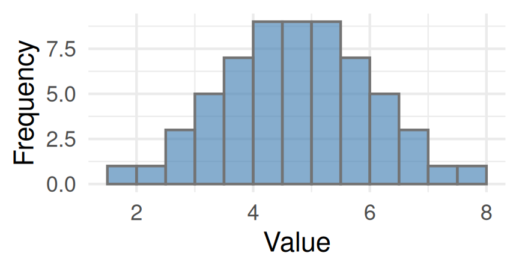
Probability density function
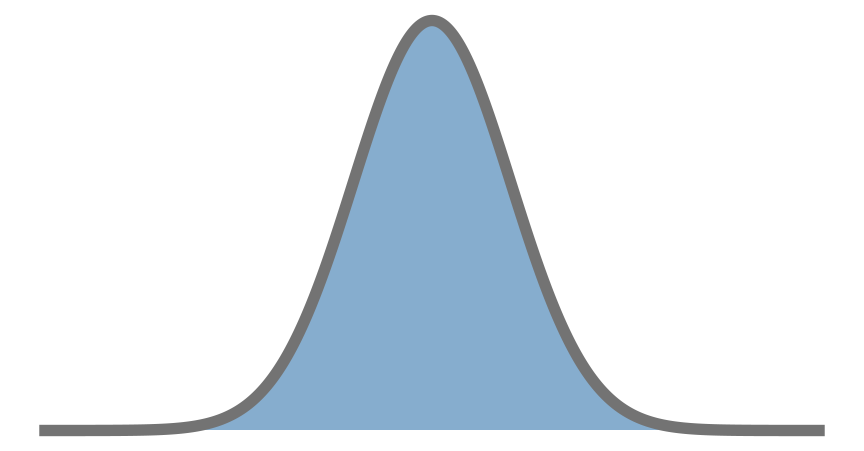
f(x)=\frac{1}{\sigma\sqrt{2\pi}}\exp\!\left(-\frac{(x-\mu)^2}{2\sigma^2}\right)
Warning
You do NOT need to know this formula!
Probability density function
A probability density function describes how likely the range of continuous values in a population
- Notations are used to represent a PDF’s features
- \mathcal{N} is a family of distributions
- \mu mean; \sigma SD encode the shape of the distribution
X \sim \overbrace{\mathcal{N}}^{\text{family}}(\underbrace{\mu, \sigma}_{\text{features}})
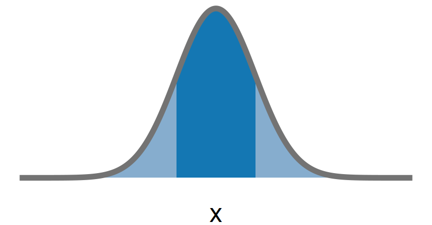
The area under the probability curve sums to 1
Recall
- Population refers to all members of a group that you want to draw a conclusion upon.
- Mean \mu describes the central tendency or typical value
- Standard deviation \sigma describes the spread in the values
Probability density function - why?
Continuous values have infinite number of possible values
- Not feasible to assign an exact probability for any single exact value e.g. 165.210123 cm tall
- “What is the exact probability a person is 165.210123… cm tall?” 😵💫
PDF reframes to:
“What is the probability a person is between 160 cm and 170 cm tall?”

PDFs in this unit:
- Normal (\mathcal{N})
- Standard Normal (Z)
- Student’s t (next week)
Normal distribution
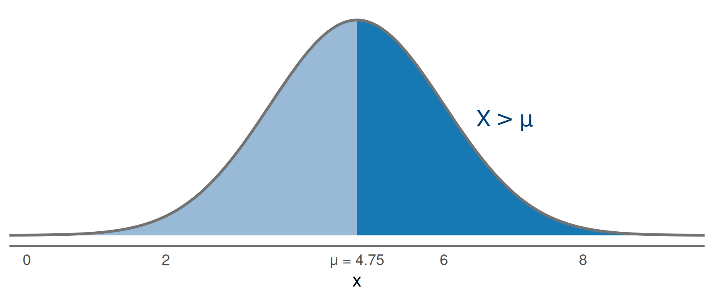
Notation: X \sim \mathcal{N}(\overbrace{\mu}^{\text{Mean}},\overbrace{\sigma}^{\text{SD}})
\mu = 8 ; \sigma = 2
=NORM.DIST(x, mean, standard_dev, cumulative)
x: the cutoff on the horizontal axis.x= 8mean: the distribution mean, \mu = 8standard_dev: the distribution SD, \sigma = 2cumulativeTRUEgives the shaded area to the left ofxFALSEgives the curve’s height atx= 8
Recall
- The shape is symmetrical
- Skewness = 0
- \mu = median = mode
Standard Normal distribution
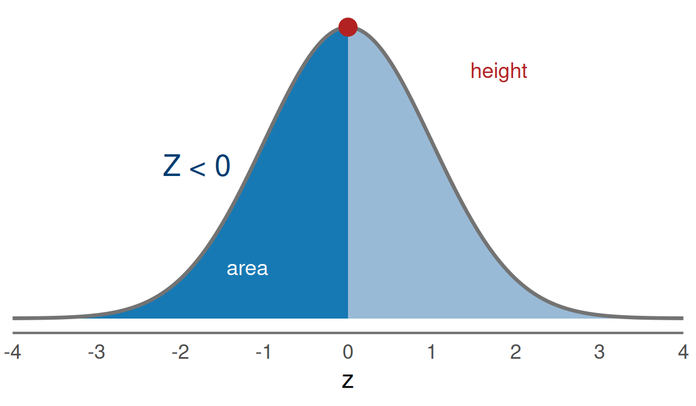
Notation: Z \sim \mathcal{N}(\overbrace{0}^{\text{Mean}},\overbrace{1}^{\text{SD}})
\mu = 0 ; \sigma = 1
=NORM.S.DIST(z, cumulative)
z: the cutoff on the horizontal axis.z= 0cumulativeTRUEgives the shaded area to the left ofzFALSEgives the curve’s height atz= 0
Tip
- Also known as the** Z distribution** and the values as z-scores
- Standard normal is exactly the same as Normal only with fixed mean = 0 and SD = 1
Finding the shaded region
Which part of the curve do you want?
TRUE: cumulative area
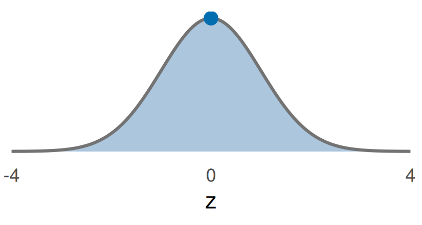
=NORM.S.DIST(0,TRUE) gives 0.5.
Right area: 1 - cumulative area

=1-NORM.S.DIST(0,TRUE) gives 0.5 for P(Z>0).
Tip
The cumulative TRUE result is the area to the left. Subtract it from 1 to get the area to the right. FALSE returns a density height, not a right-tail area.
Finding the shaded region (normal) - Watch me 👀
For the shaded half of the normal curve, X>\mu with \mu=4.75 and \sigma=1.25:
P(X>4.75)=1-P(X\leq 4.75)=0.5
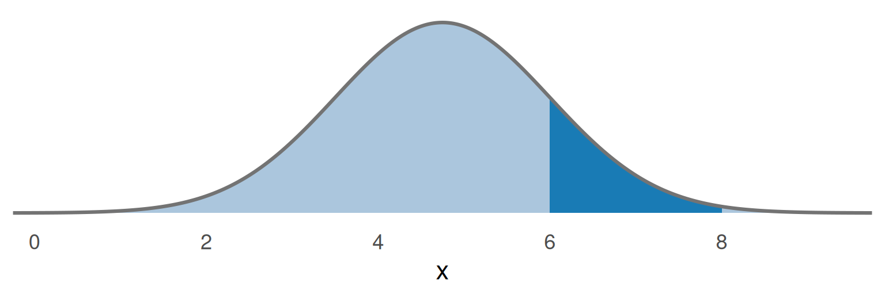
Solution
Excel: =1-NORM.DIST(4.75,4.75,1.25,TRUE)
Finding the shaded region (Z) - You try ✏️
For the shaded half of the standard normal curve, Z>0:
P(Z>0)=1-P(Z\leq 0)=0.5
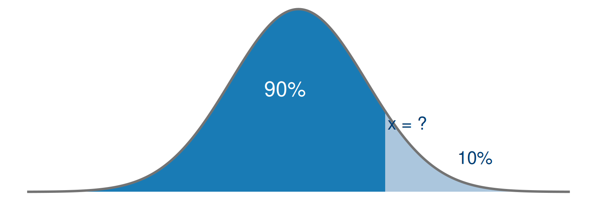
Solution
Excel: =1-NORM.S.DIST(0,TRUE)
Finding a region from 6 to 8 (normal) - Watch me 👀
For X\sim\mathcal{N}(4.75,1.25), find the shaded probability P(6<X<8).

Solution
Excel: =NORM.DIST(8,4.75,1.25,TRUE)-NORM.DIST(6,4.75,1.25,TRUE)
The area between 6 and 8 is 0.154 (about 15.4%).
Finding the middle region (Z) - You try ✏️
For Z\sim\mathcal{N}(0,1), find P(-1<Z<1) in Excel.
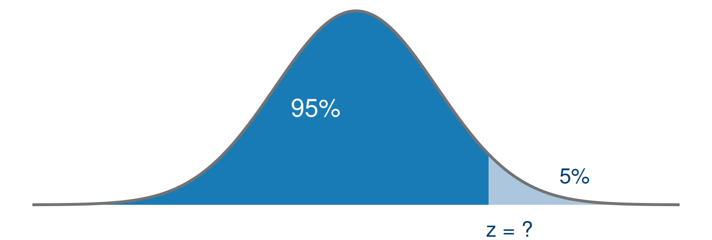
Solution
Excel: =NORM.S.DIST(1,TRUE)-NORM.S.DIST(-1,TRUE)
The shaded area is 0.6827 (about 68.3%).
Finding the inverse (normal) - Watch me 👀
Which value x has 90% of the normal distribution to its left? Here X\sim\mathcal{N}(4.75,1.25).
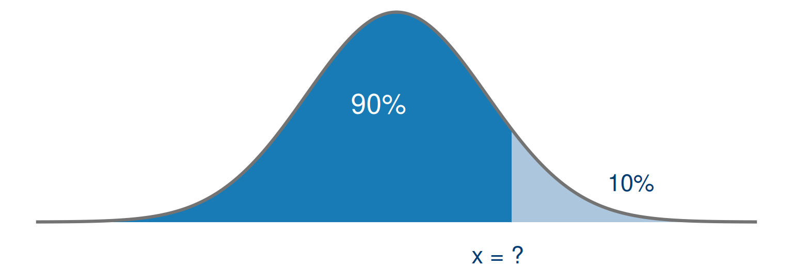
Solution
Excel: =NORM.INV(0.90,4.75,1.25) gives x\approx6.35.
Finding the inverse (Z) - You try ✏️
Which z score has 95% of the standard normal distribution to its left?

Solution
Excel: =NORM.S.INV(0.95) gives z\approx1.645.
Finding the inverse (Z) - Trick question 🥸
Which z score has 5% of the standard normal distribution to its left?

Solution
Excel: =NORM.S.INV(1-0.95) gives z\approx-1.645.
This is the mirror image of the 5% left-tail cutoff: the magnitude is the same, but the sign is negative.
PDF: Recap
- A PDF shows how probability is spread across numerical values; area under the full curve is 1.
NORM.DISTuses a chosen mean and SD;NORM.S.DISTuses mean 0 and SD 1.- With
TRUE, Excel returns the area to the left. - Subtract from 1 for a right tail area.
- Subtract two cumulative areas for a region between cutoffs.
NORM.INVandNORM.S.INVturn a left-area probability into a cutoff value.
Normal — mean 8, SD 2
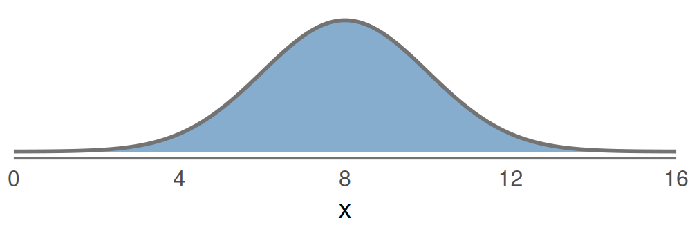
Standard normal — mean 0, SD 1
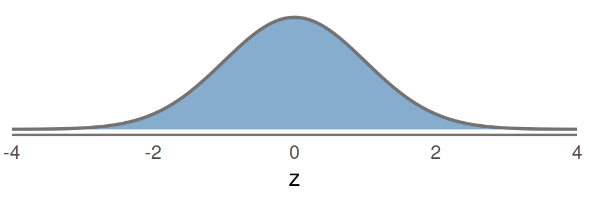
Exercise: - You try ✏️
Important
- Answer the exercise questions in Moodle
- 30 mins
- Password protected
- Work together!
Assignment work that can now be completed
Q1–Q2 complete. Q5 remains a draft.
Due: Monday 4 January 2027, 11:55 pm Melbourne time
Worth: 20% of the unit